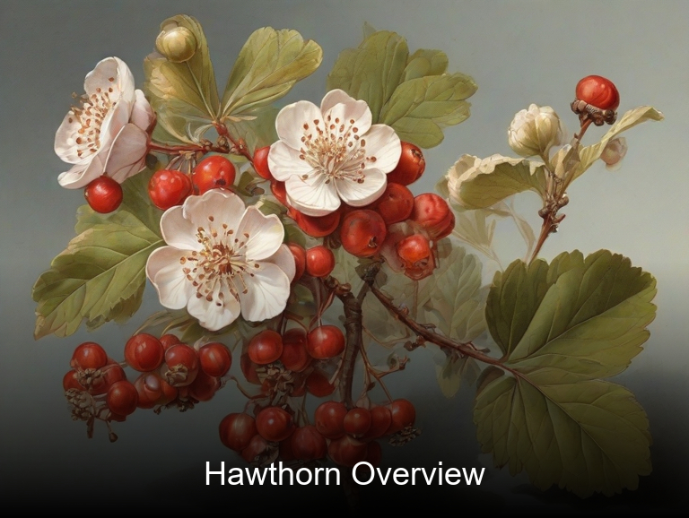
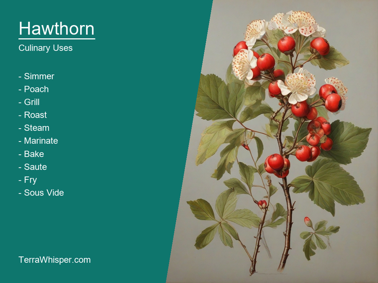
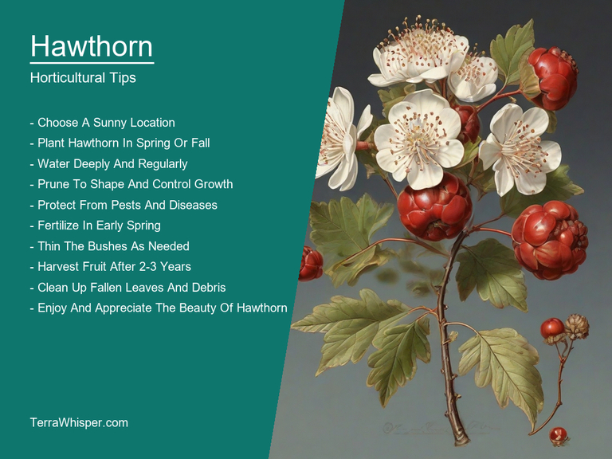

Hawthorn, scientifically known as Crataegus oxyacantha, is a versatile plant with numerous uses. For thousands of years, it has been recognized for its medicinal and culinary properties. It is also appreciated for its beauty in gardens and landscapes, due to its ornamental appeal. Furthermore, hawthorn trees play a significant role in botanical heritage by their enduring presence throughout history.
In terms of its medicinal and culinary uses, Hawthorn has been used as a traditional remedy for various health issues like cardiovascular problems and heart-related complications. It is believed to possess antioxidant properties that help protect cells from damage caused by free radicals and inflammation. The plant's flowers and leaves have also been utilized in herbal teas, while its fruits are often eaten raw or made into jams and preserves.
Ornamentally, Hawthorn trees, shrubs, and their brightly colored berries provide an excellent accent to any garden setting. They can be used as stand-alone plants or incorporated into mixed plantings for added interest. The flowers, which come in various colors including white, pink, and red, typically bloom from late spring until mid-summer and have a sweet fragrance that attracts bees. In the fall, Hawthorn leaves turn a lovely yellow shade adding to its visual appeal.
Botanically speaking, Hawthorn is a genus of flowering plants within the family Rosaceae, which are mainly found in temperate regions throughout Europe and Asia. It has been known to flourish in various habitats, including forests, hedges, and coastal areas. The species Crataegus oxyacantha, commonly referred to as Black Hawthorn or May-tree, is one of the most common and widespread in many parts of the world. Its botanical history dates back thousands of years, with evidence of its use by ancient civilizations for a multitude of purposes.
In this article, you will discover what are the medicinal and culinary uses of hawthorn. Then, you'll learn how to cultivate it, what is its botanical profile, and how it was used historically.
Hawthorn (Crataegus oxyacantha) has many health benefits, such as alleviating the symptoms of heart-related issues like high blood pressure and irregular heartbeats by helping to strengthen the cardiovascular system. It also aids in digestion and soothes indigestion while contributing positively to mental wellbeing as well as treating anxiety and depression. These uses highlight its versatility when dealing with an extensive range of health conditions.
The following illustration lists the most important uses of hawthorn in medicine.
In regards to the medicinal constituents, Hawthorn contains several compounds like flavonoids, saponins, proanthocyanidins, tannins, and various vitamins and minerals that contribute towards its diverse healing properties. These substances not only show therapeutic value for the cardiovascular system but also promote overall health and wellbeing.
The parts used in medicinal preparations usually include the flowers, leaves, berries, and bark of Hawthorn trees. These components are often processed into teas, tinctures, or supplements that provide specific health benefits. The tea made from the flowers is known to help regulate blood pressure, while the berry-based products can aid in digestion and support heart function. Additionally, preparations made with leaves and bark may be used for a general tonic effect.
While Hawthorn does offer numerous health benefits, it's essential to consider its potential side effects. Some users have experienced headaches, stomach issues, or dizziness after taking this plant in certain dosages or forms. It's advisable to consult a medical professional before starting any new herbal treatment, particularly for individuals with pre-existing heart conditions, as some drug interactions may occur.
To ensure the safe and effective use of Hawthorn medicinally, various precautions should be observed. For instance, it's not recommended to consume large amounts of Hawthorn berries or leaves due to their laxative properties. Pregnant women are also advised against using this plant due to potential risks for both the mother and child, though a small amount of Hawthorn tea might be consumed in moderation for improving general health and wellbeing.
The culinary uses of Hawthorn, specifically Crataegus oxyacantha, are primarily centered around its edible fruits and flowers. These offer flavorful additions to various dishes, including jams, jellies, cider, pies, and desserts. Additionally, the tree itself provides a beautiful ornamental touch to gardens and landscapes with its distinct appearance and blooming flowers.
The following illustration lists the most common uses of hawthorn for culinary purposes.

The flavor profile of Hawthorn fruit can be described as tart and slightly sweet, making it an interesting alternative for those who enjoy fruity notes in their culinary creations. With the right recipe modifications or blending techniques, Hawthorn's unique taste can be harmonized to suit a wide range of dishes and palates.
The edible parts of Hawthorn primarily include its fruits and flowers. While both are used for cooking, the fruits tend to dominate in culinary applications due to their accessibility year-round. The berries can be picked when they reach a deep red hue or when they're fully ripe, while the blooms come into play during their springtime flowering period.
To enhance the flavor and texture of dishes utilizing Hawthorn fruits or flowers, it is essential to follow certain culinary tips. Cooks should consider using other ingredients that complement its tartness, such as sugar, honey, or citrus for a balanced taste. Additionally, blending the berries in with fruits that possess contrasting flavors can help create an intriguing combination.
Despite Hawthorn's culinary appeal and various benefits, it is important to note potential side effects and toxicity risks when considering its consumption. Although no specific studies have highlighted significant health concerns, individuals with allergies to the plant or those under medical supervision should consult their healthcare providers before introducing any new foods into their diets.
Hawthorn (Crataegus oxyacantha) is a small to medium-sized horticultural plant known for its white flowers and red berries. It can be grown as a hedge or specimen, requiring just a little bit of attention and maintenance to flourish.
The following illustration lists the most important tips to cutlitvate hawthorn.

To grow Hawthorn successfully, firstly obtain suitable soil that drains well but retains some moisture. Plant it in full sun exposure and give it plenty of space for its roots to expand without any competition from neighboring plants or roots. While growing Hawthorn, keep in mind that it is a slow-growing plant, so be patient with the progression.
The ideal growing conditions for Hawthorn include well-drained soil, moderate fertility, and a pH range between 5.8 and 7.0. As Hawthorn prefers full sun exposure, plant it in an area where it can receive at least six hours of direct sunlight daily. Avoiding dense shade will help maintain the plant's natural shape and promote healthy growth. Moreover, regular watering during dry periods is crucial to support the growth and prevent any potential issues due to drought.
Maintaining Hawthorn involves pruning its branches in late winter to ensure an open center and a balanced appearance throughout the year. It's also essential to remove dead or damaged branches as they can be disease-carriers and potentially compromise the plant's health. Fertilize twice a year, preferably in spring and mid-summer, using slow-release fertilizers enriched with nitrogen, phosphorus, and potassium for optimal growth. Additionally, Hawthorn is susceptible to various diseases and pests; therefore, regular monitoring and timely intervention are crucial to keep it healthy.
Hawthorn, with botanical name Crataegus oxyacantha, belongs to the domain Eukaryota, kingdom Plantae, phylum Spermatophyta (Seed plants), class Magnoliopsida (Dicotyledons), order Rosales, family Rosaceae, genus Crataegus and species oxyacantha. Hawthorn is commonly known as Mayflower in England or Whitethorn in Ireland.
The following illustration display the botanical profile of hawthorn.
There are several variants of this shrub, each with their own particular differences, such as the White-flowered Hawthorn which produces flowers that have a white color instead of the usual ones ranging from pink to red. Another variant is the Midland Hawthorn, found in Central Europe and characterized by its reddish fruit rather than black or orange.
Geographically, Crataegus oxyacantha is native to Europe and temperate Asia. It can be found growing wildly as bushes or small trees within meadows and forest edges, as well as along hedgerows, river banks and the like. They prefer well-drained soils and partial shade but can adapt to various conditions depending on the region.
starting with seeds that germinate when environmental conditions are favorable, leading to seedlings that will gradually transform into shrubs or trees within approximately five years. The plant then enters its reproductive stage by flowering in late spring, which eventually leads to fruit production in summer and fall. After a few years, the plant may stop developing buds, indicating its potential death; however, it can remain as part of the landscape for decades through suckering (regeneration from underground stems).
The Hawthorn tree, scientifically known as Crataegus oxyacantha, has played a vital role historically in the field of traditional medicine. Dating back centuries, various cultures around the world have utilized its bark and berries for their medicinal properties to treat an array of health issues such as cardiovascular conditions, anxiety, high blood pressure, digestive disorders, and even insomnia. Its use has been well-documented in herbal remedies throughout history, showcasing the tree's effectiveness as a healing plant across cultures and continents.
The following illustration lists the most well known historical uses of hawthorn.
Apart from its therapeutic uses, Hawthorn also holds a place in ancient practices of divination. The leaves of the tree, arranged meticulously according to a specific pattern, were used by certain Native American tribes as an aid in interpreting messages and gaining insight into their futures. These divinatory practices were often incorporated with ceremonies and rituals, further emphasizing the significance of Hawthorn in spiritual and religious customs across many different communities.
The Hawthorn tree has also been woven throughout the fabric of history by means of legends and folklore. For example, it is said that the goddess Brigid, a Celtic deity associated with healing, fertility, and protection, was often depicted surrounded by hawthorn branches. This connection to the divine further underscores Hawthorn's importance in various cultures' mythology and belief systems. In addition, the blooming Hawthorn blossoms have been linked to the arrival of springtime, a period steeped with renewal and rebirth, which has led to the tree becoming symbolic of hope, happiness, and enduring love in literature, arts, and folk traditions around the world.